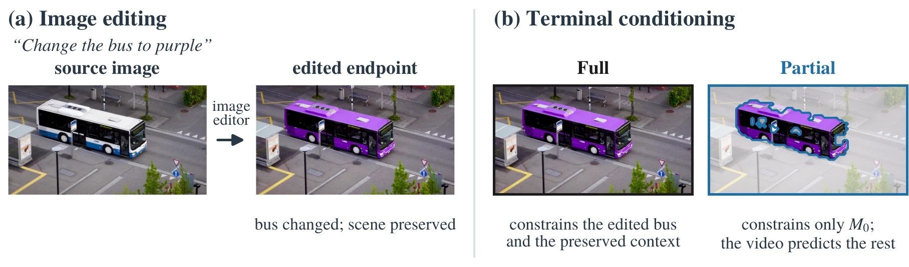
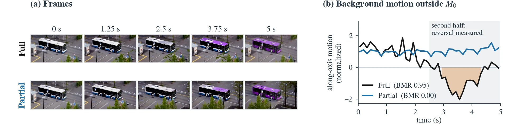
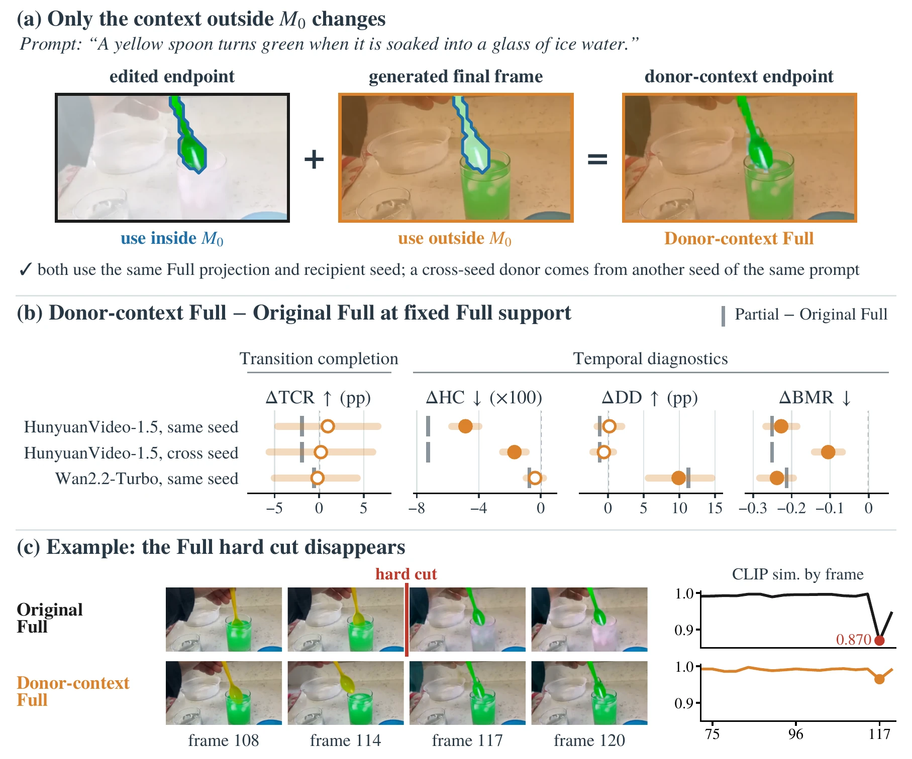
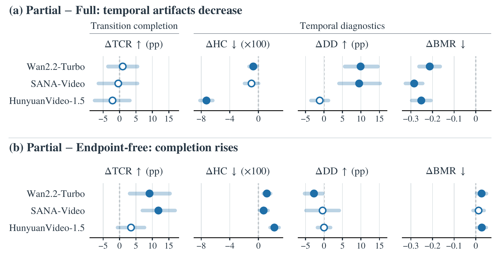
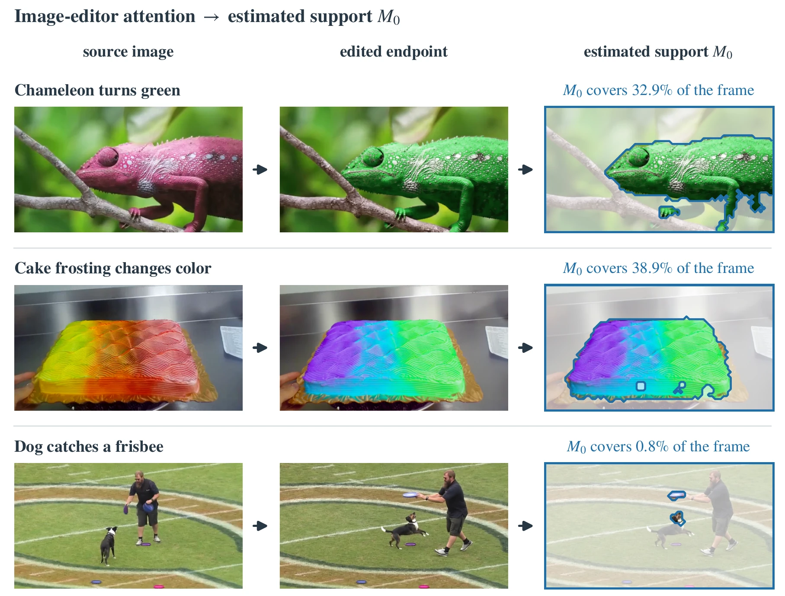
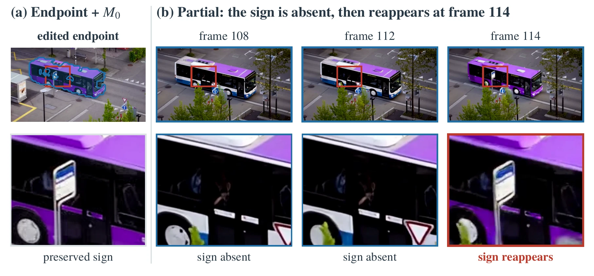

Edited Endpoints as Partial Goals for Image-to-Video Generation
Which parts of an edited endpoint should constrain a video's future?
1Seoul National University2OGQ
†Corresponding authors
Code and data will be released upon publication.

An edited endpoint carries the requested change, but it also keeps the rest of the scene in the source image's layout. Imposing the whole frame turns that preserved context into requirements on the video's final state, a spatial over-specification that shows up as discontinuities, late background reversals, and motion suppression. Imposing only the edit-relevant support keeps completion comparable to full-frame conditioning while reducing these artifacts.
Abstract
Edited endpoint images make the target of an image-to-video transition explicit and can improve transition completion, but also preserve context in the source image's layout. Full-frame endpoint conditioning turns this preserved context into requirements on the video's final state, potentially inducing temporal artifacts. We measure discontinuity with Hard-Cut (HC), late background reversal with Background Motion Reversal (BMR), and motion suppression with Dynamic Degree (DD). These artifacts appear across five video models spanning training-free and learned endpoint conditioning, in model-specific forms. We study Partial, a selective conditioning scheme that constrains only an edit-relevant region estimated from image-editor attention and leaves the remaining terminal content to the video model. Across three backbones on TC-Bench-I2V, Partial reduces temporal artifacts relative to full-frame conditioning, with no significant difference in Transition Completion Ratio (TCR); on Wan2.2-Turbo, uniformly weakening conditioning does not reproduce these reductions. A donor-context intervention keeps full-frame conditioning and replaces only the context outside the edit-relevant region with the final frame of a Partial video. It lowers HC and BMR on HunyuanVideo-1.5 and lowers BMR while restoring DD on Wan2.2-Turbo, with no significant difference in TCR, so constraint extent alone does not account for these artifacts. Together, these findings suggest that edited endpoints should serve as partial future goals, although edit relevance does not guarantee future validity.
Key findings
Terminal content matters beyond constraint extent
With full-frame support unchanged, the donor-context intervention lowers HC and BMR on HunyuanVideo-1.5, and lowers BMR while restoring DD on Wan2.2-Turbo.
Support area and placement yield distinct trade-offs
On Wan2.2-Turbo, edit-relevant placement favors completion at matched area; shrinking support lowers HC, whereas enlarging it raises BMR. Tested global softening does not reproduce Partial's artifact reductions.
Partial reduces temporal artifacts at comparable completion
Across three backbones, Partial mitigates temporal artifacts relative to full-frame endpoint conditioning at comparable TCR. Restricting Frame Guidance to the same support likewise keeps its completion gain and removes its motion suppression.
Full-frame endpoints pull the background back

Terminal content, not only constraint extent
Full-frame endpoint conditioning and Partial differ in both the imposed terminal content and the constraint extent. The donor-context intervention keeps the edited endpoint inside M0, substitutes the final frame of a paired Partial rollout outside it, and constrains the entire terminal frame with the same full-frame projection.

Partial versus full-frame conditioning

Edit-relevant support from image-editor attention

Limitation: edit relevance is not future validity

BibTeX
@article{kim2026edited,
title = {Edited Endpoints as Partial Goals for Image-to-Video Generation},
author = {Kim, Sihyun and Jo, Sanghyun and Kim, Kyungsu},
journal = {arXiv preprint},
year = {2026}
}